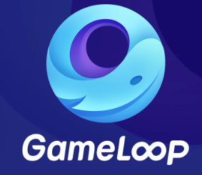
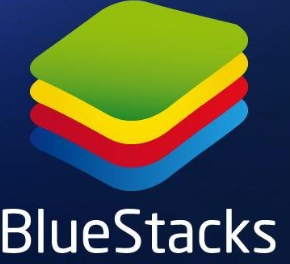

Cette question se pose par des centaines de personnes est ce que on peut jouer à des jeux totalement gratuitement sur pc et la réponse et oui on peut et tous ça grace à des émulateurs de jeux ici on va vous ptésenter leur top 3 des meilleures émulateurs de jeux
Tout d'abord c'est qoui un émulateur de jeux?
un émulateur de jeux est tout simplement un logiciel qui permet de d'installer des jeux et des application sur ordinateur voici le top 3:
LDPlayer est un émulateur Android pour Windows axé sur les jeux vidéo et destiné aux joueurs. Il est vrai quevous pouvez lancer n'importe quel type d'application Android à partir de celui-ci, mais il est essentiellement conçu pour le jeu. Voici le lien de télécargement de Ldplayer: Télécharger Ldplayer
GameLoop est un émulateur de jeux vidéos développé par l'entreprise chinoise Tencent, qui s'appelait autrefois Tencent Gaming Buddy. Il s'agit en somme d'un logiciel qui permet de simuler numériquement les conditions d'un support physique, comme une console ou un smartphone, sur un ordinateur. En passant par GameLoop, vous allez pouvoir jouer à des jeux Android, normalement réservés aux mobiles, sur votre PC ou votre Mac. Téléchargement GAME LOOP
et pour le dernier émulateur et qui considérer comme le meilleure de tous est BLUESTACKS
BlueStacks est une plate-forme PC. Étant donné que vous utilisez un téléphone, qui vas vous rediriger vers la page Google Play.lien de téléchargemrnt de BLUESTACKS
